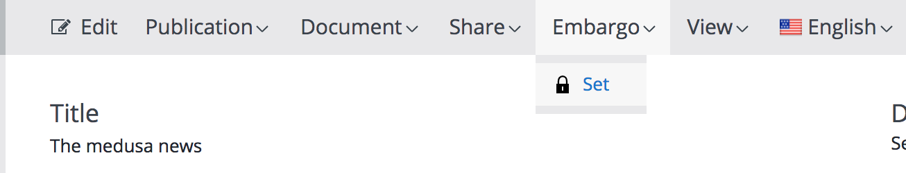

Using the plugin
General
Prior to using the plugin, you need an embargo-enabled user. Please see section User/groups configuration on how to create one.
Putting a document under embargo
This is the simplest operation. Open any document, image or asset and select 'Set' from the 'Embargo' menu in the toolbar. This sets the document under the usergroup's specific embargo flag.
Removing the embargo from a document
To remove the embargo either select 'Remove' from the menu, or schedule the removal for a later time by selecting 'Schedule Remove Embargo'. The latter will open a dialog allowing you to set the embargo expiration date.

Cancelling/ Rescheduling the embargo expiration
You can cancel the scheduling of embargo expiration, or reschedule it. To do that you must first have set an expiration shcedule (see paragraph above). Then 2 new options will be available, cancelling the schedule or changing its date.

Known limitations
- There are cases where a non-embargo user may accidentally overwrite content created by an embargo user. For example, if an image is under embargo and linked to a document, then a non-embargo user cannot see the linked image and can overwrite it in the document.
- History plugin may show some embargo related information. The Hippo log and version history do not take into account the embargo status of a document.
- Workflows for an image or asset that is placed under embargo are limited. The only options that are available is the website actions and the embargo button.
- Faceted Navigation may show unauthorized, embargo documents. There is a workaround for this, just add a filter to the faceted navigation configuration to exclude documents under embargo.